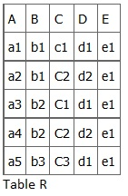
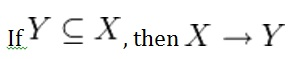
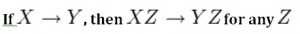
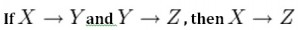
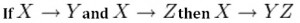
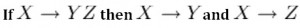
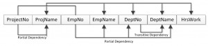

Functional Dependencies
الاعتماديات الوظيفية
المتن الرئيسي
SIN ———-> Name, Address, Birthdate
الاعتمادية الوظيفية (functional dependency, FD) هي علاقة بين خاصيتين (attribute)، عادةً بين المفتاح الأساسي (PK) وباقي الخصائص غير المفتاحية داخل الجدول. بالنسبة لأي علاقة R، تكون الخاصية Y معتمدة وظيفيًا على الخاصية X (وهي عادةً المفتاح الأساسي)، إذا كان لكل حالة صالحة من X تحدّد تلك القيمة من X قيمة Y تعريفًا. ويوضح هذا التمثيل الآتي هذه العلاقة:
SIN, Course ———> DateCompleted
X ———–> Y
ISBN ———–> Title
يُسمَّى الجانب الأيسر في مخطط الاعتمادية الوظيفية أعلاه محدِّدًا (determinant)، بينما يُسمَّى الجانب الأيمن المعتمدًا (dependent). وفيما يلي بعض الأمثلة.
Key Terms
Armstrong’s axioms: a set of inference rules used to infer all the functional dependencies on a relational databaseDBA: database administrator
decomposition: a rule that suggests if you have a table that appears to contain two entities that are determined by the same PK, consider breaking them up into two tables
dependent: the right side of the functional dependency diagram
determinant: the left side of the functional dependency diagram
functional dependency (FD): a relationship between two attributes, typically between the PK and other non-key attributes within a table
non-normalized table: a table that has data redundancy in it
Union: a rule that suggests that if two tables are separate, and the PK is the same, consider putting them together
في المثال الأول أدناه، يحدّد SIN الاسم Name والعنوان Address وتاريخ الميلاد Birthdate. ومعرفة SIN، يمكننا تحديد أي من الخصائص الأخرى داخل الجدول.
Exercises
See Chapter 12.
SIN ———-> Name, Address, Birthdate
في المثال الثاني، يحدّد SIN و Course تاريخ الإكمال (DateCompleted). ويجب أن يعمل هذا أيضًا مع مفتاح أساسي مركّب (composite key).
SIN, Course ———> DateCompleted
يشير المثال الثالث إلى أن ISBN يحدّد العنوان Title.
ISBN ———–> Title
قواعد الاعتماديات الوظيفية
تأمّل جدول البيانات r(R) التالي الخاص بمخطط العلاقة R(ABCDE) المبيّن في الجدول 11.1.

أثناء النظر في هذا الجدول، اسأل نفسك: ما نوع الاعتماديات التي يمكننا ملاحظتها بين الخصائص في الجدول R؟ وبما أن قيم A فريدة (a1, a2, a3، إلخ)، فإنه يترتب على تعريف الاعتمادية الوظيفية ما يلي:
A → B, A → C, A → D, A → E
- ويترتب كذلك أن A →BC (أو أي مجموعة جزئية أخرى من ABCDE).
- ويمكن تلخيص هذا في A →BCDE.
- ومن فهمنا للمفاتيح الأساسية، فإن A هي مفتاح أساسي.
وبما أن قيم E دائمًا متطابقة (جميعها e1)، فإنه يترتب ما يلي:
A → E, B → E, C → E, D → E
غير أننا لا نستطيع بصفة عامة تلخيص ما سبق في ABCD → E، لأننا بصفة عامة لدينا A → E، و B → E، و AB → E.
ملاحظات أخرى:
- تركيبات BC فريدة، وبالتالي BC → ADE.
- تركيبات BD فريدة، وبالتالي BD → ACE.
- إذا تطابقت قيم C، تطابقت قيم D أيضًا. وبالتالي C → D
- غير أن قيم D لا تحدّد قيم C
- إذن C لا تحدّد D، و D لا تحدّد C.
النظر إلى البيانات الفعلية قد يساعد على توضيح الخصائص المعتمدة وأيها محدِّدات.
قواعد الاستدلال
بديهيات أرمسترونغ (Armstrong’s axioms) هي مجموعة من قواعد الاستدلال المستخدَمة لاستنتاج جميع الاعتماديات الوظيفية على قاعدة بيانات علائقية. وقد طوّرها William W. Armstrong. وفيما يلي وصف لما سيُستخدم من الرموز لتفسير هذه البديهيات.
لتكن R(U) مخطط علاقة فوق مجموعة الخصائص U. وسنستخدم الأحرف X و Y و Z لتمثيل أي مجموعة جزئية من، وللاختصار، اتحاد مجموعتين من الخصائص، بدلًا من الصيغة المعتادة X U Y.
بديهية الانعكاس
تقول هذه البديهية: إذا كانت Y مجموعة جزئية من X، فإن X تحدّد Y (انظر الشكل 11.1).

فمثالًا، PartNo —> NT123 حيث X (PartNo) مكوّن من أكثر من جزء واحد من المعلومات؛ أي Y (NT) و partID (123).
بديهية التوسعة
تقول بديهية التوسعة، وتُعرف أيضًا باعتمادية جزئية (partial dependency): إذا كانت X تحدّد Y، فإن XZ تحدّد YZ لأي Z (انظر الشكل 11.2).

تقول بديهية التوسعة إن كل خاصية غير مفتاحية يجب أن تعتمد اعتمادًا كاملًا على المفتاح الأساسي. وفي المثال المبيّن أدناه، لا تعتمد StudentName و Address و City و Prov و PC (الرمز البريدي) إلا على StudentNo، ولا على StudentNo مع Grade.
StudentNo, Course —> StudentName, Address, City, Prov, PC, Grade, DateCompleted
هذا الوضع غير مرغوب فيه لأن كل خاصية غير مفتاحية يجب أن تعتمد اعتمادًا كاملًا على المفتاح الأساسي. ففي هذا الوضع، لا تعتمد معلومات الطالب إلا اعتمادًا جزئيًا على المفتاح الأساسي (StudentNo).
لإصلاح هذه المشكلة، نحتاج إلى تفكيك الجدول الأصلي إلى جدولين كالتالي:
- الجدول 1: StudentNo, Course, Grade, DateCompleted
- الجدول 2: StudentNo, StudentName, Address, City, Prov, PC
بديهية التعدّية
تقول بديهية التعدّية: إذا كانت X تحدّد Y، و Y تحدّد Z، فإن X يجب أن تحدّد Z أيضًا (انظر الشكل 11.3).

يحتوي الجدول أدناه على معلومات لا علاقة لها مباشرة بالطالب؛ فمثلًا، ينبغي أن يكون للبرنامج ProgramID و ProgramName جدول خاص به. فالخاصية ProgramName لا تعتمد على StudentNo؛ وإنما تعتمد على ProgramID.
StudentNo —> StudentName, Address, City, Prov, PC, ProgramID, ProgramName
هذا الوضع غير مرغوب فيه لأن خاصية غير مفتاحية (ProgramName) تعتمد على خاصية غير مفتاحية أخرى (ProgramID).
لإصلاح هذه المشكلة، نحتاج إلى تفكيك هذا الجدول إلى جدولين: أحدهما للاحتفاظ بمعلومات الطالب والآخر للاحتفاظ بمعلومات البرنامج.
- الجدول 1: StudentNo —> StudentName, Address, City, Prov, PC, ProgramID
- الجدول 2: ProgramID —> ProgramName
غير أننا ما زلنا بحاجة إلى ترك مفتاح أجنبي (FK) في جدول الطالب حتى نتمكن من تحديد البرنامج الذي يسجَّل فيه الطالب.
الاتحاد
تقترح هذه القاعدة أنه إذا كان جدولان منفصلان والمفتاح الأساسي فيهما هو نفسه، فقد ترغب في وضعهما معًا. وتقول إنه إذا كانت X تحدّد Y و X تحدّد Z، فإن X يجب أن تحدّد Y و Z أيضًا (انظر الشكل 11.4).

فمثالًا، إذا كان:
- SIN —> EmpName
- SIN —> SpouseName
فقد ترغب في دمج هذين الجدولين في جدول واحد كالتالي:
SIN –> EmpName, SpouseName
قد يختار بعض مسؤولي قواعد البيانات (DBA) إبقاء هذين الجدولين منفصلين لسببين. أولًا، كل جدول يصف كيانًا (entity) مختلفًا، ولذلك ينبغي فصل الكيانات. ثانيًا، إذا كان من المفترض أن يبقى SpouseName فارغًا (NULL) في معظم الوقت، فلا حاجة لإدراجه في الجدول نفسه الذي يحوي EmpName.
التفكيك
التفكيك (decomposition) هو عكس قاعدة الاتحاد. فإذا كان لديك جدول يبدو وكأنه يحتوي كيانين يحدّدهما المفتاح الأساسي نفسه، ففكّر في تقسيمه إلى جدولين. وتقول هذه القاعدة إنه إذا كانت X تحدّد Y و Z، فإن X تحدّد Y، و X تحدّد Z كلٌّ على حدة (انظر الشكل 11.5).

مخطط الاعتماديات
يوضّح مخطط الاعتماديات، المبيّن في الشكل 11.6، الاعتماديات المختلفة التي قد توجد في جدول غير مُطبَّع (unnormalized). والجدول غير المُطبَّع هو جدول يحتوي على تكرار في البيانات.

تُحدَّد الاعتماديات التالية في هذا الجدول:
- ProjectNo و EmpNo، معًا، يمثلان المفتاح الأساسي.
- اعتمادية جزئية (partial dependencies): ProjectNo —> ProjName
- EmpNo —> EmpName, DeptNo,
- ProjectNo, EmpNo —> HrsWork
اعتمادية متعدّية (transitive dependency):
- DeptNo —> DeptName
بديهيات أرمسترونغ (Armstrong’s axioms): مجموعة من قواعد الاستدلال المستخدَمة لاستنتاج جميع الاعتماديات الوظيفية على قاعدة بيانات علائقية
مسؤول قاعدة البيانات (database administrator, DBA): مسؤول عن منح صلاحية الوصول إلى قاعدة البيانات ومراقبة استخدامها وإدارة جميع الموارد التي تدعم استخدام نظام قاعدة البيانات بالكامل
التفكيك (decomposition): قاعدة تقترح أنه إذا كان لديك جدول يبدو وكأنه يحتوي كيانين يحدّدهما المفتاح الأساسي نفسه، ففكّر في تقسيمه إلى جدولين
المعتمد (dependent): الجانب الأيمن في مخطط الاعتمادية الوظيفية
المحدِّد (determinant): الجانب الأيسر في مخطط الاعتمادية الوظيفية
الاعتمادية الوظيفية (functional dependency, FD): علاقة بين خاصيتين، عادةً بين المفتاح الأساسي وباقي الخصائص غير المفتاحية داخل الجدول
جدول غير مُطبَّع (non-normalized table): جدول يحتوي على تكرار في البيانات
الاتحاد (Union): قاعدة تقترح أنه إذا كان جدولان منفصلان والمفتاح الأساسي فيهما هو نفسه، ففكّر في وضعهما معًا
انظر الفصل 12.
الإسنادات
هذا الفصل من كتاب تصميم قواعد البيانات (database design)، بما في ذلك الصور ما لم يُنصّ على خلاف ذلك، هو نسخة مشتقة من بديهيات أرمسترونغ (Armstrong’s axioms) من ويكيبيديا، الموسوعة الحرة، بترخيص المشاع الإبداعي: نسب المشاركة والمشابهة 3.0 غير المنقول (Creative Commons Attribution-ShareAlike 3.0 Unported)
كتبت المادة التالية Adrienne Watt:
- بعض قواعد الاعتماديات الوظيفية
- المصطلحات المفتاحية